3.1.3 BLE Multirole Multilink Transparent UART
Getting Started with Peripheral Building Blocks
Getting Started with Central Building Blocks
BLE Transparent UART --> BLE Multilink Transparent UART
Introduction
This document helps users create a multirole multilink device and send/receive characters between connected BLE devices over Microchip proprietary Transparent UART Profile. The multilink central enables users to connect multiple peripheral devices to a central device. The multilink central device acts as peripheral device and is connected to an another central device(MBD application). The central is MBD application and peripheral devices in this tutorial are WBZ451 devices.
Users can choose to just run the precompiled Application example hex file on the WBZ451 Curiosity board and experience the demo or can go through the steps involved in developing this Application from scratch.
Recommended Reading
Hardware Requirement
| Tool | Qty |
|---|---|
| WBZ451 Curiosity Board | 3 (min) |
| Micro USB cable | 3 |
SDK Setup
Software Requirement
Smartphone App
- Light Blue
Programming the precompiled hex file or Application Example
Programming the hex file using MPLABX IPE
- Precompiled Hex file is located in
"<Harmony Content Path>\wireless_apps_pic32cxbz2_wbz45\apps\ble\building_blocks\multirole\multilink\hex"folder - For more details on the steps, go to
Programming A DeviceNote: Ensure to choose the correct Device and Tool information.
Programming the Application using MPLABX IDE
- Follow steps mentioned in of Running a Precompiled Example document
- Open and program the Application Example "mr_ml_trp_uart.x" located in "<Harmony Content Path>\wireless_apps_pic32cxbz2_wbz45\apps\ble\building_blocks\multirole\multilink\firmware" using MPLABX IDE
<Harmony Content Path> how to find what is my Harmony Content Path
Demo Description
Upon programming the demo application, multirole multilink device (WBZ451) will start scanning for near by peripheral devices to connect. After a connection has been made data can be sent back and forth over UART between the two devices that are connected. The multirole multilink device continues scanning until 100 secs and allows new peripheral devices that are advertising to join. For this example we are going to demonstrate 2 BLE links
Central Device → MultiRole MultiLink Device → Peripheral Device1 & Peripheral Device2 & Peripheral Device3
Demo will print start of the scanning "Scanning",connected "Connected!" and disconnected "Disconnected" state on a terminal emulator like TeraTerm@ (Speed: 115200, Data: 8-bit, Parity: none, stop bits: 1 bit, Flow control: none) Application Data to be sent to the connected peripheral device should be entered in the terminal emulator.
Testing
Device 2 will have PUBLIC address of {0xB1, 0xB2, 0xB3, 0xB4, 0xB5, 0xB6}
Device 3 will have PUBLIC address of {0xC1, 0xC2, 0xC3, 0xC4, 0xC5, 0xC6}
Precompiled Hex files for peripheral devices with different addresses as mentioned above are available here
Demo Experience when using 4 WBZ451 Curiosity boards 3 configured as Peripheral and 1 configured as MultiRole device This section assumes that a user has already programmed the peripheral_trp_uart application on 3 WBZ451 Curiosity Boards.
- Board1:
- Open TeraTerm @ (Speed: 115200, Data: 8-bit, Parity: none, stop bits: 1 bit, Flow control: none).
- Reset the board. Upon reset, "Scanning" message is displayed on the TeraTerm.
- Upon finding peripheral device with public address {0xA1, 0xA2, 0xA3, 0xA4, 0xA5, 0xA6} message "Found Peer Node" will be displayed and a connection request will be initiated "Initiating connection".
- During the scan time if more devices are available which will be true in this case, multirole multilink device will keep initiating connections with the new peer nodes.
- Board2/Board3/Board4:
- Open TeraTerm @ (Speed: 115200, Data: 8-bit, Parity: none, stop bits: 1 bit, Flow control: none).
- Reset the board. Upon reset, "Advertising" message is displayed on the
TeraTerm.Note: Scanner is configured to scan only for 100 seconds. Ensure the peer device is advertising.
After connection establishment, both the peripheral device (Board2/3/4) and multirole multilink device(Board1) will display "Connected!" message on respective terminal windows.
- Characters entered on any peripheral device's (Board2,3,4) terminal emulator will appear on central device's (Board1) terminal emulator.
- Characters entered on any central device(MBD app) terminal using Rx char (49535343-8841-43f4-a8d4-ecbe34729bb3) will appear on multirole device's (Board1) terminal emulator and also send to all peripheral devices connected.
- Characters entered on multirole multilink device
terminal emulator will appear on peripheral devices emulator in a round-robin fashion
without priority. For example in order to send character "a" to all peripheral devices,
"aaa" needs to be entered on terminal emulator of the central device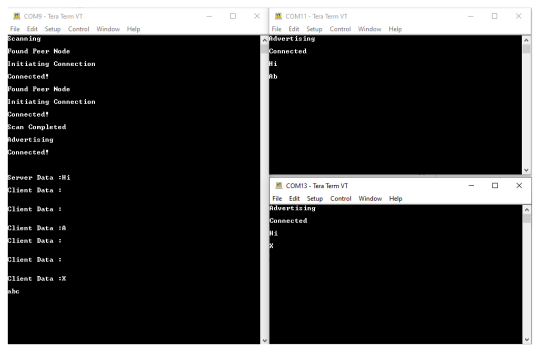
Developing this Application from scratch using MPLAB Code Configurator
- Create a new MCC Harmony Project. For more details, refer to 2.5 Creating a New MCC Harmony Project.
- Import component configuration: This
step helps users setup the basic components and configuration required to develop this
application. For information on how to import the component configuration, refer to
14.3 Importing Existing App Example Configuration . Note: Import and Export functionality of component configuration will help users to start from a known working setup of configuration.
- Accept Dependencies or satisfiers, select Yes
- Verify if the Project Graph window has
all the expected configuration.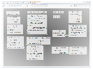
Verify Scan, Advertisement and Transparent Profile Configuration
- Select BLE_Stack component in project
graph.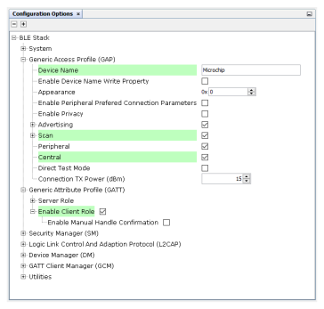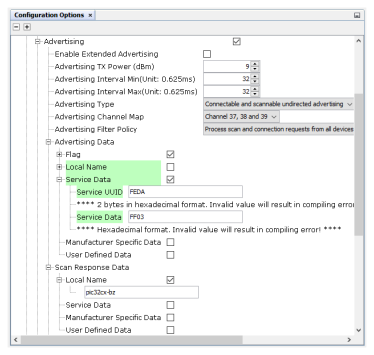Note: Advertising Interval Min and Max can be modified. Advertisement payload can be configured by user here.
- Select Transparent Profile configuration.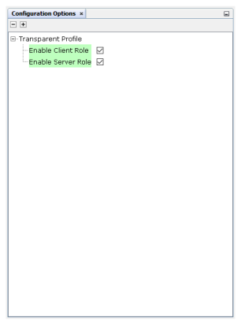
Generating a Code
For more details on code generation, refer to 14.2 MPLAB Code Configurator(MCC) Code Generation.
The BLE stack initialization routine executed during Application Initialization can be found in project files. This intitialization routine is automatically generated by the MCC. This call initializes and configures the GAP, GATT, SMP, L2CAP and BLE middleware layers.
| Source Files | Usage |
|---|---|
app.c |
Application State machine, includes calls for Initialization of all BLE stack (GAP,GATT, SMP, L2CAP) related component configurations |
app_ble.c |
Source Code for the BLE stack related component configurations, code related to function calls from app.c |
app_ble_handler.c |
All GAP, GATT, SMP and L2CAP Event handlers |
app_trspc_handler.c |
All Transparent UART Client related Event handlers |
app_trsps_handler.c |
All Transparent UART Server related Event handlers |
ble_trspc.c |
All Transparent Client Functions for user application |
ble_trsps.c |
All Transparent Server Functions for user application |
Header Files
ble_gap.h: This header file contains BLE GAP functions and is automatically included in the app.c fileble_trspc.h: This is the header file associated with API’s and structures related to BLE Transparent Client functions for Application Userble_trsps.hThis is the header file associated with API’s and structures related to BLE Transparent Server functions for Application User
Function Calls
- APP_BleStackInit() is the API that will be called inside the Applications Initial State -- APP_STATE_INIT in app.c
User Application Development
-
ble_trspc.hin app.c, BLE Transparent UART client related API's are available here -
"
ble_trsps.h" in app.c, BLE Transparent UART Server related API's are available here -
"osal/osal_freertos_extend.h" in app_trsps_handler.c, OSAL related API's are available here -
definitions.h in all the files where UART will be used to print debug informationNote:
definitions.his not specific to just UART peripheral, instead it should be included in all application source files where peripheral functionality will be exercised
- User action is required as mentioned here.
BLE_GAP_SetScanningEnable(true, BLE_GAP_SCAN_FD_ENABLE, BLE_GAP_SCAN_MODE_OBSERVER, 1000);This API is called in the Applications initialstate - APP_STATE_INIT in app.c. Scan duration is 100 seconds
BLE_GAP_EVT_ADV_REPORT event is generated upon finding Adverstisements on legacy channels
- BLE connection can be initiated by using the API BLE_GAP_CreateConnection(&createConnParam_t);
// code snippet to filter scan results and initiate connection // Filter Devices based of Address, for this example address checking only 2 bytes if ((p_event->eventField.evtAdvReport.addr.addr[0] == 0xA1 && p_event->eventField.evtAdvReport.addr.addr[1] == 0xA2) || (p_event->eventField.evtAdvReport.addr.addr[0] == 0xB1 && p_event->eventField.evtAdvReport.addr.addr[1] == 0xB2) || (p_event->eventField.evtAdvReport.addr.addr[0] == 0xC1 && p_event->eventField.evtAdvReport.addr.addr[1] == 0xC2)) { SERCOM0_USART_Write((uint8_t *)"Found Peer Node\r\n", 17); BLE_GAP_CreateConnParams_T createConnParam_t; createConnParam_t.scanInterval = 0x3C; // 37.5 ms createConnParam_t.scanWindow = 0x1E; // 18.75 ms createConnParam_t.filterPolicy = BLE_GAP_SCAN_FP_ACCEPT_ALL; createConnParam_t.peerAddr.addrType = p_event->eventField.evtAdvReport.addr.addrType; memcpy(createConnParam_t.peerAddr.addr, p_event->eventField.evtAdvReport.addr.addr, GAP_MAX_BD_ADDRESS_LEN); createConnParam_t.connParams.intervalMin = 0x10; createConnParam_t.connParams.intervalMax = 0x10; createConnParam_t.connParams.latency = 0; createConnParam_t.connParams.supervisionTimeout = 0x48; SERCOM0_USART_Write((uint8_t *)"Initiating Connection\r\n", 23); BLE_GAP_CreateConnection(&createConnParam_t); }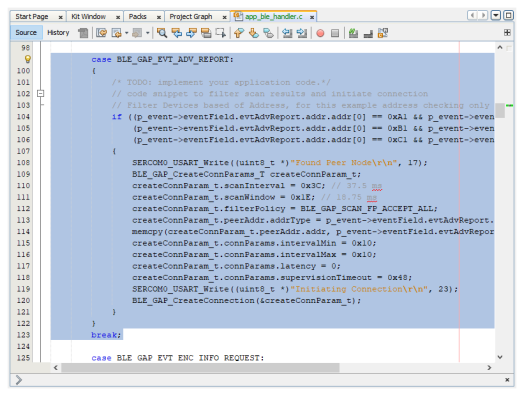
- In app_ble_handler.c BLE_GAP_EVT_CONNECTED event will be generated when a BLE connection is completed
Connection handle associated with the peer peripheral device needs to be saved for data exchange after a BLE connection
p_event->eventField.evtConnect.connHandle has this information
- In Multilink Application, unique connection handler's will be generated for all the peripheral links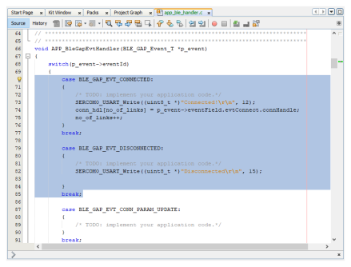
- The initiated scan operation will provide scan
timeout event, we can start the advertisement to connect with another central device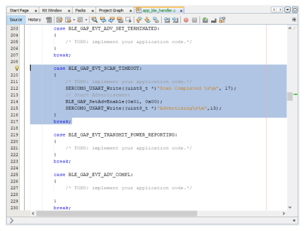
- Add "APP_MSG_UART_CB" to the generated APP_MsgId_T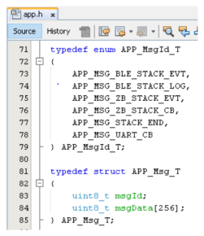
BLE_TRSPC_SendData(conn_hdl[i], 1, &uart_data); is the API to be used for sending data towards the Client device
BLE_TRSPS_SendData(conn_hdl[i], 1, &uart_data); is the API to be used for sending data towards the Server device
Note:* The precompiled application example uses a UART callback to initiate the data transmission upon receiving a character on UART
Example Implementation for Transmitting the received data over UART using the BLE_TRSPC_SendData APIuint16_t conn_hdl[3];// connection handle info captured @BLE_GAP_EVT_CONNECTED event uint8_t uart_data; uint8_t no_of_links;// No of connected peripheral devices uint8_t i = 0;// link index void uart_cb(SERCOM_USART_EVENT event, uintptr_t context) { APP_Msg_T appMsg; // If RX data from UART reached threshold (previously set to 1) if( event == SERCOM_USART_EVENT_READ_THRESHOLD_REACHED ) { // Read 1 byte data from UART SERCOM0_USART_Read(&uart_data, 1); appMsg.msgId = APP_MSG_UART_CB; OSAL_QUEUE_Send(&appData.appQueue, &appMsg, 0); } } void APP_UartCBHandler() { // Send the data from UART to connected device through Transparent service BLE_TRSPC_SendData(conn_hdl[i], 1, &uart_data); i++; if(i==no_of_links) i = 0; //reset link index } // Register call back when data is available on UART for Peripheral Device to send // Enable UART Read SERCOM0_USART_ReadNotificationEnable(true, true); // Set UART RX notification threshold to be 1 SERCOM0_USART_ReadThresholdSet(1); // Register the UART RX callback function SERCOM0_USART_ReadCallbackRegister(uart_cb, (uintptr_t)NULL);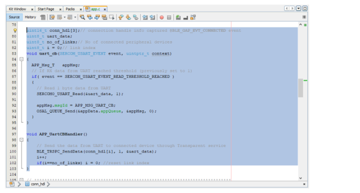
BLE_TRSPC_EVT_RECEIVE_DATA is the event generated when data is sent from peripheral device
Users need to use the BLE_TRSPC_GetDataLength(&data_len) & BLE_TRSPS_GetDataLength(&data_len) API to extract the length of application data received
-
BLE_TRSPC_GetData(&conn_hdl, data); & BLE_TRSPS_GetData(&conn_hdl, data); API is used to retrieve the data, conn_hdl is the value obtained from Connection Handler sectionNote:
- BLE_TRSPC_Event_T p_event structure stores the information about BLE transparent UART callback functions
- BLE_TRSPS_Event_T p_event structure stores the information about BLE transparent UART callback functions
Example Implementation for printing the received data from peripheral device over UART/* TODO: implement your application code.*/ uint16_t data_len; uint8_t *data; // Retrieve received data length BLE_TRSPC_GetDataLength(p_event->eventField.onReceiveData.connHandle, &data_len); // Allocate memory according to data length data = OSAL_Malloc(data_len); if(data == NULL) break; // Retrieve received data BLE_TRSPC_GetData(p_event->eventField.onReceiveData.connHandle, data); // Output received data to UART SERCOM0_USART_Write((uint8_t *)"\r\nClient Data :", 15); SERCOM0_USART_Write(data, data_len); // Free memory OSAL_Free(data);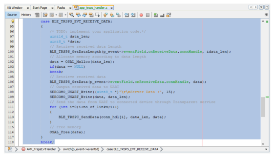
Users can exercise various other BLE functionalities by usingBLE Stack API